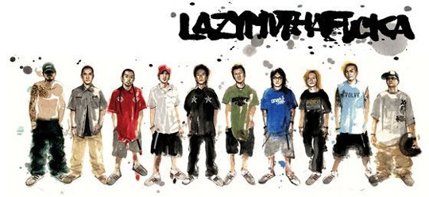

 今天在张晓舟的BLOG上看到这篇文章《我们就是学不会普通话》。写得不错，把国内的HIP-HOP乐队现状分析了一下，鉴于很多人不喜欢看长篇文章，我摘抄以下几段供这些人看看，有兴趣的应该去看看原文。
假如从语言、音乐、文化、时尚四个层面来看Hip Hop在中国的现状，只能说中国的Hip Hop文化还仅仅停留在Hip Hop服饰鞋帽“外贸货”的阶段——一种徒有其表的时尚全球化或我所说的“跨国社会主义”盗版文化。至于Hip Hop延伸文化，在公安工商文化交通城管街道办事处居委会乃至奥运志愿小分队的天罗地网之下，你只能在自家墙上涂鸦，而在连人行道都被汽车占满的街上，x-game的过街老鼠也只有找死的份儿。想知道中国的街头文化吗？对不起，您只能上《城市画报》或者其他什么时尚杂志找，而休想在街上看到。 迄今为止中国的Hip Hop还难以奢谈音乐这个核心问题，绝大部分国内Hip Hop在音乐上都很弱智，音乐元素单一、节奏型单一，更不要说采样、混音、编曲。 最要命的是从语言到文化，中国Hip Hop都非常缺乏Hip Hop的灵魂：热气腾腾的街头气息。 中国Hip Hop要变得好玩，必得方言化，关键不在于你如何让人民群众喜闻乐见如何商业如何专业，如何用普通话统一祖国，而是你首先必须说人话。这就是为什么迄今为止中国Hip Hop最有活力的反而不是首都，而是说鸟语的粤港。
接下来他介绍了他觉得很好的一支广东HIPHOP乐队——“噔哚”，我之前没有听过，但我想今天回去我就会在我的电驴下载列表中加上。这篇文章让我想起之前的BLOG比赛中，其实我想介绍一下香港的LMF的文章，不过后来没有写。今天翻开相册，顺便把这张准备好很久的图片贴在此文顶部，看看这只已经解散了的LMF，我认为至今为止中国最好的HIPHOP乐队。 之前为什么没有写LMF，我想之前考虑到了一般人对于LMF的认识，就是一只粗口歌乐队，低俗。如今在我看来，我们的BLOG没有清纯MM照片，没有装可爱纯洁的倾向，我默认经常来看的朋友都应该是有自己是非分辨能力的，不会听到几句脏话就如何如何不适晕厥。LMF做到他们的音乐，歌词文化，真的是来源于他们的生活环境，讽刺香港社会，大骂香港乐团，唱出糜烂的夜生活屡见不鲜。LMF更用HIPHOP风格踩入时装界，扩张着自己的HIPHOP文化。 如今LMF已经解散，去年MC仁来北京的MIDI，我也没有见到真人，喜欢他们音乐的人都会有所遗憾。至今家里只保存着他们的一个演唱会现场，开篇就火爆震撼，在大屏幕上打出所有报纸杂志对他们的批评，俨然一副对媒体宣战的态势。我想对我一个比较沉默的人来说，打动我的HIPHOP并不多。
香港资深音乐杂志MCB在99年度的乐坛总结中把最佳中港台乐队授予了香港新晋hip-hop乐团大懒堂（LMF）。听着LMF，就好像在看一部反映香港青少年现状的电影。它从一群本地青年的角度去描述一个日渐繁荣而社会问题愈加严重的香港。像”咏春拳”通过描绘70、80年代的武馆来影射当代香港社会的无常生活。”我要踩下去”反映了日前极为流行的滑板一族的生活状态。而无论是深深自省的”今宵多珍重”还是讲述对社会、家庭和自我关系的看法的”无根草”，都令人深深感到一个香港青年彷徨与无助的内心世界。